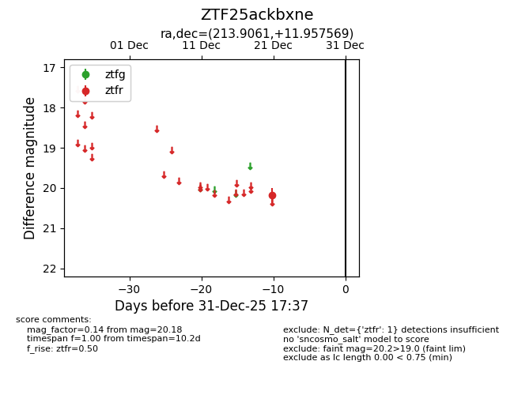
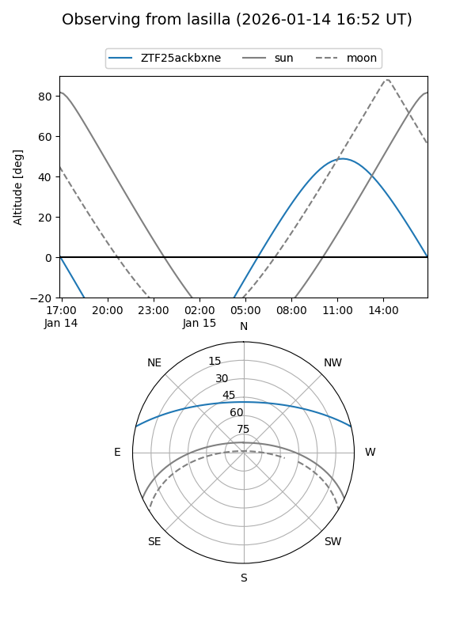
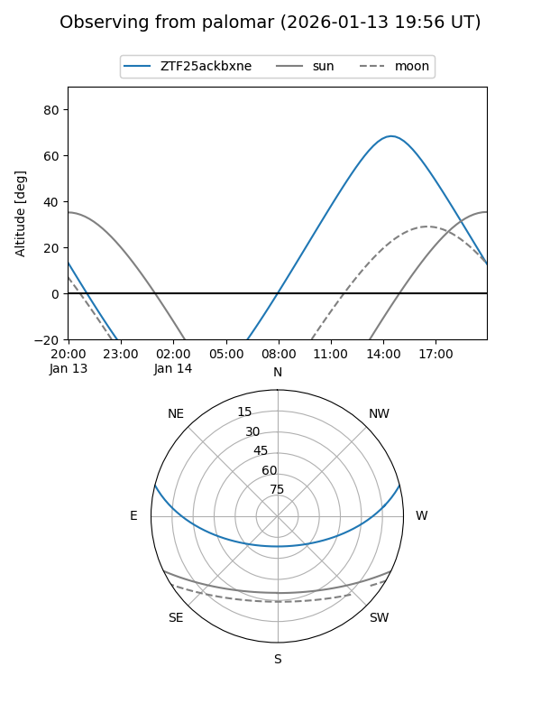

ZTF25ackbxne
Target ZTF25ackbxne at 2026-01-14 14:25
Aliases and brokers:
FINK: link
Lasair: link
ALeRCE: link
alt names
ZTF25ackbxne (ztf,fink_ztf)
Coordinates:
equatorial (ra, dec) = 213.9061,+11.95757
equatorial (HMS+DMS) = 14:15:37.46,+11:57:27.25
galactic (l, b) = (359.5008,+65.10307)
Flags:
Photometry:
last ztfr=20.05
2 ztfr detections
Lightcurve

Visibility


Additional plots